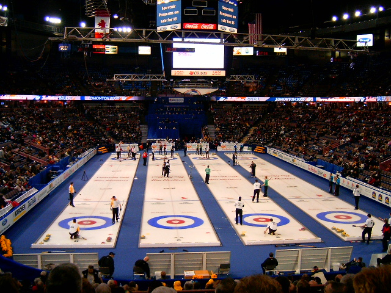

О Керлинг
Кёрлинг возник в Шотландии в начале XVI века, фактическим подтверждением существования этой спортивной игры является кёрлинговый спортивный снаряд (камень), на поверхности которого выбита дата изготовления («1511 год»), найденный на дне осушенного пруда в Данблейне[2]. Первые же летописные упоминания о кёрлинге встречаются в средневековых монастырских книгах, датированных 1541 годом, сохранившихся в шотландском аббатстве Пейсли[3].Примерно к тому же времени (1565 год) относятся две картины кисти Питера Брейгеля, на которых запечатлены нидерландские крестьяне, играющие в айсшток — игру, близкую к кёрлингу, на льду замёрзшего озера. Шотландия и Нидерланды в XVI веке имели очень сильные торговые и культурные связи, свидетельством чему является широкое распространение в континентальной Европе не только кёрлинга, но и гольфа[4]. Старейшим кёрлинг-клубом в мире является ассоциация игроков города Килсит, расположенного на севере Шотландии, основанная в 1716 году[5]. Первый клуб кёрлингистов открыт в 1737 году в провинции Файф[6]. В этом же городе находится древнейшее рукотворно созданное спортивное поле, предназначенное для игры в кёрлинг — искусственная дамба, огораживающая пруд и задающая площадку размерами 100 на 250 метров. Само слово curling впервые стало употребляться в качестве названия игры в XVII веке, после упоминания в поэме шотландского поэта Генри Адамсона. Исследователи считают, что игра получила своё имя вовсе не от сложных завитков-следов, которые оставлял за собой на льду камень, а от шотландского глагола curr, который описывает низкое рычание или рёв (в английском языке ближайшим эквивалентом является purr)[источник не указан 3051 день]. Гранитный камень, скользящий по льду, касался зазубринок льда, отчего происходил характерный звук. В некоторых районах Шотландии игра более известна под названием «Игра в ревущие камни». Несовершенная форма снарядов и неподготовленность поля не позволяли старинным кёрлерам играть, опираясь на ту или иную выигрышную стратегию, или нарабатывать спортивное мастерство — в большинстве случаев исход игры решала удача той или иной команды или игрока. Информация о снарядах содержится также в летописях шотландского города Дарвелл: ткачи после работы отдыхали, играя в кёрлинг тяжёлыми каменными грузами, использующимися в гнетах при ткацких станках, причём эти грузы имели съёмную ручку. Там также написано, что «многие жёны поддерживали авторитет своего мужа, полируя ручку камня и доводя её форму до совершенства».

Чемпионат Европы по кёрлингу Основная статья: Чемпионат Европы по кёрлингу Первый чемпионат Европы состоялся в 1975 году во Франции. В нём приняли участие 8 мужских и 7 женских сборных. Чемпионаты Европы проводятся каждый год. Олимпийские игры На Играх 1924 года были проведены демонстрационные соревнования по кёрлингу. В 1998 году кёрлинг был признан олимпийским видом спорта, и на зимних Олимпийских играх в Нагано были разыграны первые золотые медали. Победителем в соревнованиях мужчин стала команда Швейцарии, а первые золотые медали у женщин завоевала команда Канады. В феврале 2006 года Международный олимпийский комитет пересмотрел историю и постановил, что соревнования по кёрлингу на Играх 1924 года должны считаться полноценным олимпийским событием. Таким образом, первые олимпийские медали по кёрлингу распределились так: золото получила Великобритания, серебро — Швеция, бронзу — Франция. Начиная с Олимпийских игр 2018 года проходит турнир по кёрлингу в смешанных парах.

В игре участвуют две команды по 4 человека, разыгрывающие 10 эндов, в течение каждого выпуская по 8 камней. Розыгрыш в керлинге выглядит так: игрок, обутый в один скользящий ботинок, и второй нескользящий, от стартовой колодки и разгоняет по льду камень. Целей у него может быть две – выбить чужой камень или остановить свой как можно ближе к центру зачетной зоны. Другие игроки нужны для того, чтобы с помощью специальных щёток тереть лёд перед камнем, подправляя его движение. По окончании каждого энда считают очки – победившей становится команда, установившая камень ближе всего к центру. За каждый собственный камень, оказавшийся ближе к центру, чем камни противника, победители получают по одному дополнительному очку.
Правила игры КЕРЛИНГА
В фокусе: Сториз
Матч за золото
Финал
Полуфиналы
Лучшие моменты